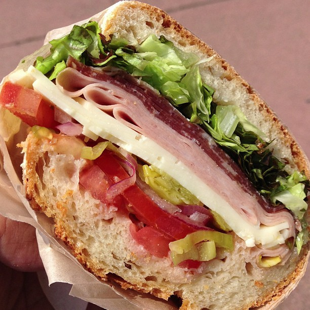

Homepage
Italian Submarine Sandwich

Description
An Italian sub is a sandwich made with cured meats, cheese, vegetables, and dressing on Italian bread. It's also known as a hoagie or hero.
Ingredients
- Bread: Crusty Italian bread or a seeded roll
- Meat: Salami, pepperoni, prosciutto, mortadella, capicola, or roast turkey
- Cheese: Provolone or Swiss
- Vegetables: Sliced tomatoes, red onions, banana peppers, black olives, shredded lettuce, or pickled peppers
- Condiments: Mayonnaise, Italian dressing, red win vinegar, pepper relish, or spicy mustard
Steps
- Spread mayo on the bottom half of the bread
- Add cured meats, cheese, and vegetables
- Top with the other half of the bread
- Wrap the sandwich in parchment paper or foil